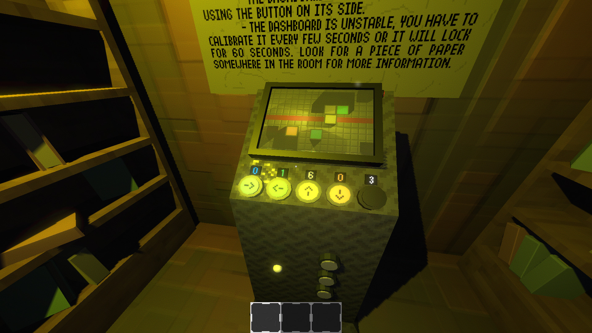
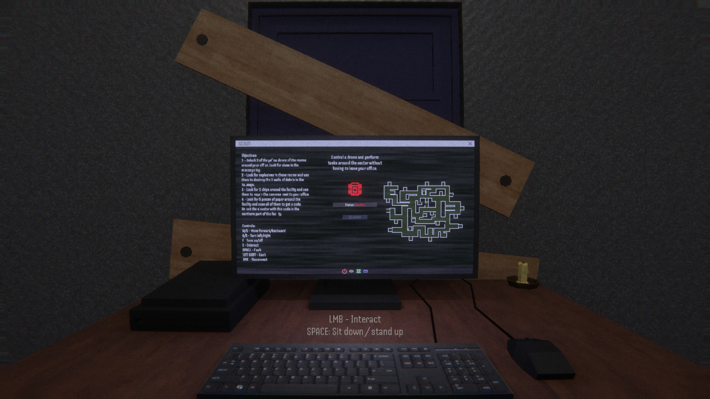
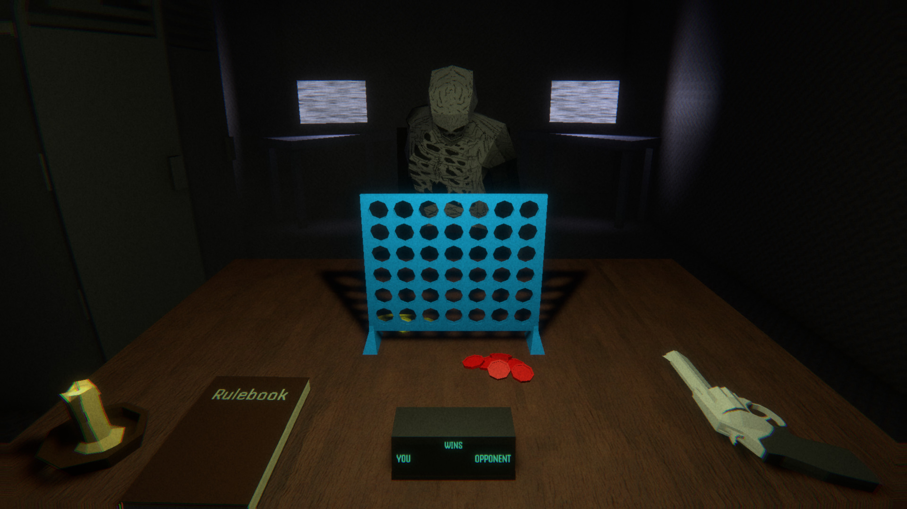
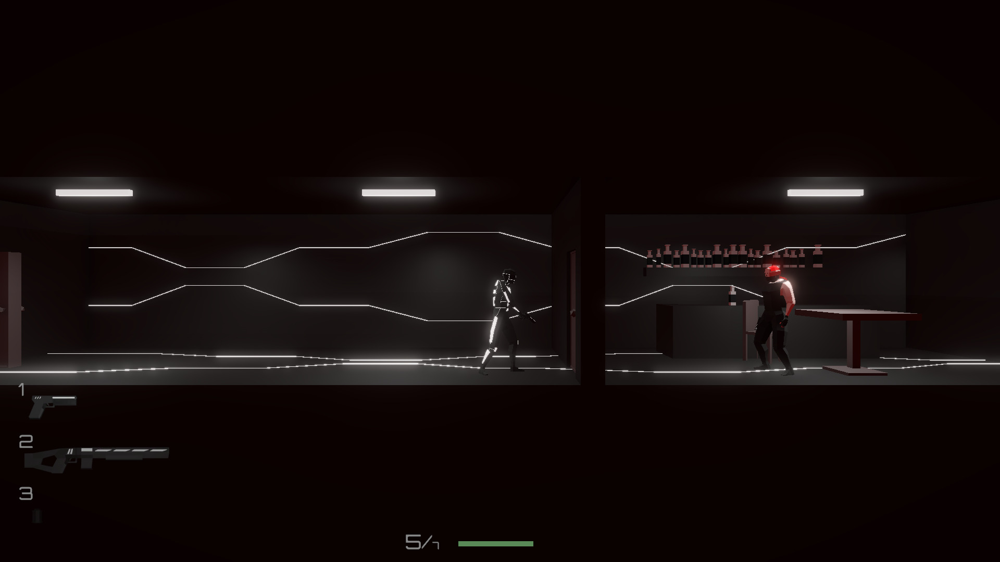

About Me
My name is Filip. I am a Bulgarian independent game developer with a strong foundation
in Unity C#, HTML, and CSS. I have been working in game development since 2020 and
have released 2 games so far, PASSAGE and Nightmares Beyond. I am a big fan of
horror games and dynamic gameplay systems, both of which I am currently
researching to be able to create the games I want. Currently working on
Cyberspace Chaos.
My Games
Here is a list of games I have made. Some are finished,
some are still in development.

PASSAGE
A short horror game about solving puzzles while surviving
from monsters with different mechanics.
Released on Steam in July 2022 and lastly updated in October 2024.
Learn More

Nightmares Beyond
A short horror game about piloting a rover through a facility
to find a way to escape while trying to outmaneuver monstrosities with unique mechanics.
Released on Itch.io in July 2025. Made in one month.
Learn More

CONNECT
A short horror game about playing a game of Connect 4 with a monster while
trying to survive from other present threats.
Unreleased, made in one week as a passion project.

Cyberspace Chaos
A 2D side-scrolling tactical shooter with stealth
and weapon modification elements.
Currently in development.
Development on Cyberspace Chaos has started!
Posted on 24/03/2026 by Fibeer
Just started work on a new 2D side-scrolling tactical shooter.
It will include a dynamic mission system, deep weapon customization and tons
of ways to complete each level. Release date TBD.
Learn More
Nightmares Beyond has been released on Itch.io!
Posted on 25/07/2025 by Fibeer
I just released my second game on Itch.io! It's a short horror game about
piloting a rover through a facility
to find a way to escape while trying to outmaneuver monstrosities
with unique mechanics.
Learn More